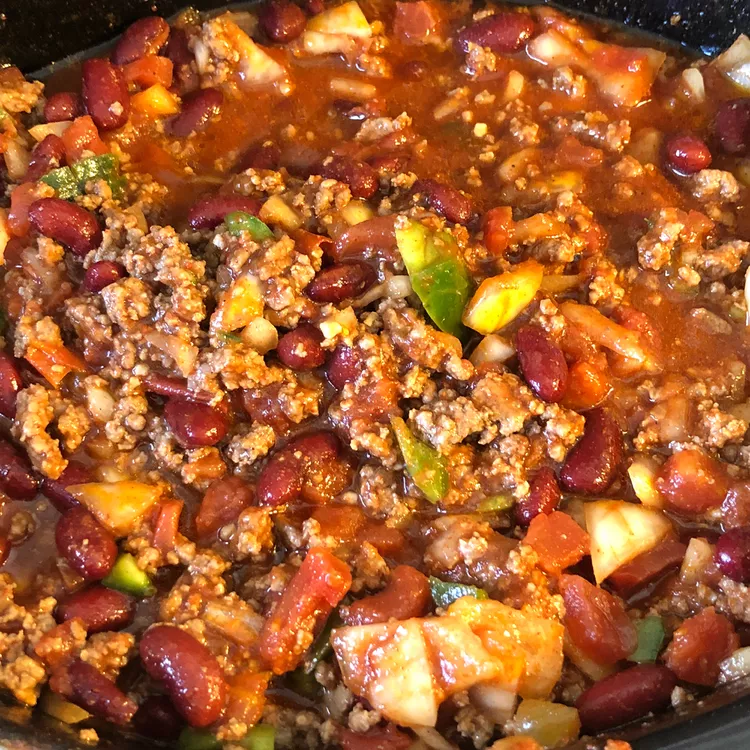

Spicy Slow-Cooked Chili

Description
A delicious chili made in the slow cooker. Make it in the morning, and
it will be ready when you get home after your busy day.
Ingredients
- 2 pounds ground beef
- 2 (16 ounce) cans kidney beans, rinsed and drained
- 2 (14.5 ounce) cans diced tomatoes, drained
- 1 (8 ounce) can tomato sauce
- 2 onions, chopped
- 1 green bell pepper, chopped
- 2 cloves garlic, minced
- 3 tablespoons chili powder
- 1 tablespoon cayenne pepper
- 2 teaspoons salt
- 1 teaspoon ground black pepper
- 1/2 cup shredded cheddar cheese
Steps
- Heat a large skillet over medium-high heat. Cook and stir ground beef
in the hot skillet until browned and crumbly, 5 to 7 minutes. Drain and
discard grease.
- Combine ground beef, kidney beans, diced tomatoes, tomato sauce, onions,
bell pepper, garlic, chili powder, cayenne pepper, salt, and black pepper
in a slow cooker. Cover and cook on low for 10 hours or high for 4 hours.
- Garnish each serving with cheddar cheese.
TIP: To make spicier, add more cayenne pepper after 2 hours
of cooking, and again after 3 hours.